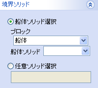

プレート
プレート
境界のソリッドを指定してプレート（板）を作成します。


操作方法
パラメータを入力すると作成形状がプレビュー表示されます。形状の確認後、OKボタンで実行します。
パラメータ
- 位置

プレートを作成する平面を選択します。(平面入力) - 板厚

板逃方向（＋側、−側、両側）、板厚、モールド位置を設定します。
- 境界ソリッド

プレートの境界となるソリッドを指定します。船殻設計以下の要素グループ内のソリッド、もしくは任意ソリッドを選択できます。
- コピー(オプション)

コピー数、オフセット値を指定して一度に複数のプレートを作成できます。

- X(Y,Z)区間(オプション)

境界ソリッド内でさらに板の大きさを指定できます。座標値もしくは２点間で指定します。
境界ソリッドを指示しない場合は必ず指定します。